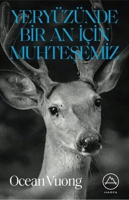
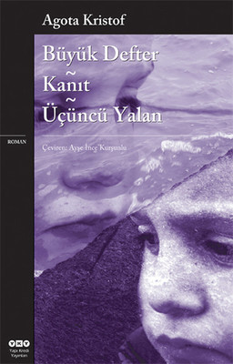
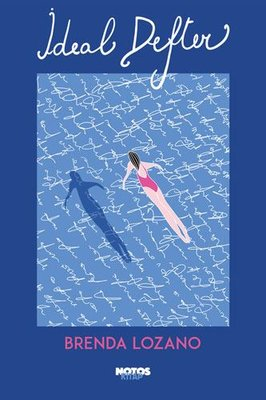
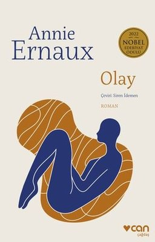
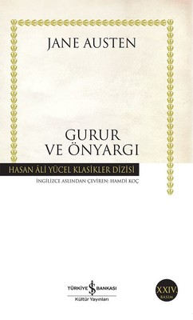

Yeryüzünde Bir An için Muhteşemiz

“Her kar tanesinin birbirinden farklı olduğunu söylerler, ama kar
fırtınası hepimizin üstünü aynı şekilde örtüyor”
Şair Ocean Vuong, yirmili yaşlarında bir oğulun okuma yazma bilmeyen
annesine hitaben yazdığı bir mektup formundaki ilk romanı Yeryüzünde
Bir An İçin Muhteşemiz’de, Vietnamlı bir ailenin ırkçı şiddetin kol
gezdiği beyaz Amerika’daki hayatta kalma mücadelesini anlatıyor.
Büyük Defter - Kanıt - Üçüncü Yalan
Agota Kristof’tan savaş, yıkım, göçmenlik, kimlik, insanlık ve yazmak üzerine tüyler ürpertici bir üçleme… Zamanın ve adın olmadığı bir coğrafyada, savaşın, felaketin, yoksulluğun ortasında anneannelerine emanet edilmiş küçük ikizler, bir yandan hayatı anlamaya çalışırken bir yandan da ne pahasına olursa olsun hayata sıkı sıkı tutunmaya çalışırlar. Gün gelir ikizlerin yolu ayrı düşer. Bir daha görüşebilecekler midir? Belki de, sınırları aşmak, sadece mekânları ve kişileri değil, kimlikleri ve hatta geçmişi bile değiştirebilir...
İdeal Defter

Adam annesini kaybetmiştir, kadın geçirdiği kazanın ardından iyileşme
dönemindedir. Tanıştıktan kısa süre sonra beraber yaşamaya başlarlar.
Ama adam annesinin anısının izinde İspanya’ya gider, kadın da
Meksiko’da onu bekler. Odysseus’u bekleyen Penelope gibi, Godot’yu
bekleyen Vladimir ve Estragon gibi...
Bu bekleyiş aynı zamanda içsel bir yolculuk. Hem sevgilisinin
yokluğunun yarattığı boşluğu kapamaya hem de şehirdeki kırtasiyeleri
dolaşarak ideal defterini bulmaya çalışır.
İnsanın Anlam Arayışı

“Gerçekten ihtiyaç duyulan şey, yaşama yönelik tutumumuzdaki temel bir değişmeydi. Yaşamdan ne beklediğimizin gerçekten önemli olmadığını, asıl önemli olan şeyin yaşamın bizden ne beklediği olduğunu öğrenmemiz ve dahası umutsuz insanlara öğretmemiz gerekiyordu. Yaşamın anlamı hakkında sorular sormayı bırakmamız, bunun yerine kendimizi yaşam tarafından her gün, her saat sorgulanan birileri olarak düşünmemiz gerekirdi.”
Olay
Sene 1963, Rouen. Fransa’da kürtaj hâlâ yasadışı, telaffuz bile edilemeyen bir kelimedir; dilde dahi yeri yoktur. Ernaux o sırada yirmi üç yaşında bir üniversite öğrencisidir, hamile olduğunu öğrenir ve dünyası başına yıkılır: Bu hamilelik, kendisinin ve ailesinin toplumsal başarısızlıklarının damgası olacaktır. Buna engel olmak isteyen genç kadın, hamileliğini yakınlarından gizleyerek çaresizce bir çözüm yolu aramaya girişir.
Gurur ve Ön Yargı
Gurur ve Önyargı romanı edebiyat tarihinin ilk büyük kült eseri olarak kabul edilir. İlk kez 1813’te yayımlanan ve iki yüzyılı aşkın süredir en çok okunan romanlardan biri olarak kalmayı başaran Gurur ve Önyargı aynı zamanda yazıldığı dönemin en cesur yapıtlarından biridir. Bir aşk hikâyesi ekseninde 19. yüzyıl İngiltere’si kırsalında yaşayan taşralı orta sınıfla soyluların yaşamına odaklanan eserin bir diğer kayda değer özelliği ise tüm toplumsal ve ahlaki eleştirileri bir aşk hikâyesinin arkasına gizleyen başarılı kurgusudur.